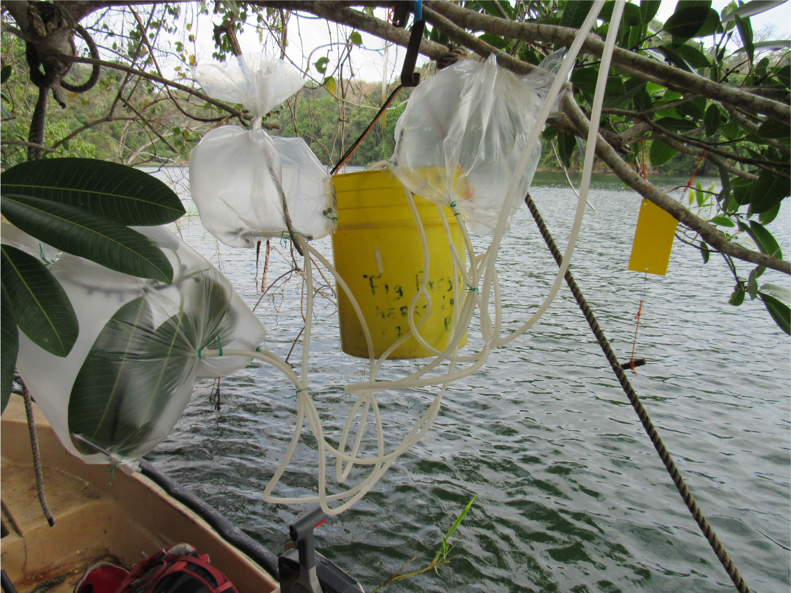

Research

As part of postdoctoral research, I am using comparative genomics and ecological approaches to investigate the factors that generate and maintain variation in a complex trait, floral fragrance detection, which mediates many interactions between plants and insects. In insect, chemosensory gene families on the antennae participate in recognizing floral fragrances. I will unravel ecological factors that contribute to the genomic evolution of floral fragrance detection in the highly co-evolved symbiosis between figs (genus Ficus) and fig wasps (superfamily Chalcidoidea) through 3 studies: (1) I will examine chemosensory gene family copy number variants (CNVs) in a comparative, community context to determine if convergent evolution
at the phenotypic level attraction to the same host fragrance is reflected at the genomic level. (2) To generate insight into ecological specialization, I will examine CNVs between specialists associated with a single fig species and generalists associated with 2-4 hosts. (3) Combining analysis of CNVs and genomic architecture with estimates of effective population size, I will also investigate how fig wasp population dynamics have affected their chemosensory gene family evolution.

Four Anim pariatur cliche reprehenderit, enim eiusmod high life accusamus terry richardson ad squid. 3 wolf moon officia aute, non cupidatat skateboard dolor brunch. Food truck quinoa nesciunt laborum eiusmod. Brunch 3 wolf moon tempor, sunt aliqua put a bird on it squid single-origin coffee nulla assumenda shoreditch et. Nihil anim keffiyeh helvetica, craft beer labore wes anderson cred nesciunt sapiente ea proident. Ad vegan excepteur butcher vice lomo. Leggings occaecat craft beer farm-to-table, raw denim aesthetic synth nesciunt you probably haven't heard of them accusamus labore sustainable VHS.
Five Anim pariatur cliche reprehenderit, enim eiusmod high life accusamus terry richardson ad squid. 3 wolf moon officia aute, non cupidatat skateboard dolor brunch. Food truck quinoa nesciunt laborum eiusmod. Brunch 3 wolf moon tempor, sunt aliqua put a bird on it squid single-origin coffee nulla assumenda shoreditch et. Nihil anim keffiyeh helvetica, craft beer labore wes anderson cred nesciunt sapiente ea proident. Ad vegan excepteur butcher vice lomo. Leggings occaecat craft beer farm-to-table, raw denim aesthetic synth nesciunt you probably haven't heard of them accusamus labore sustainable VHS.
Six Anim pariatur cliche reprehenderit, enim eiusmod high life accusamus terry richardson ad squid. 3 wolf moon officia aute, non cupidatat skateboard dolor brunch. Food truck quinoa nesciunt laborum eiusmod. Brunch 3 wolf moon tempor, sunt aliqua put a bird on it squid single-origin coffee nulla assumenda shoreditch et. Nihil anim keffiyeh helvetica, craft beer labore wes anderson cred nesciunt sapiente ea proident. Ad vegan excepteur butcher vice lomo. Leggings occaecat craft beer farm-to-table, raw denim aesthetic synth nesciunt you probably haven't heard of them accusamus labore sustainable VHS.